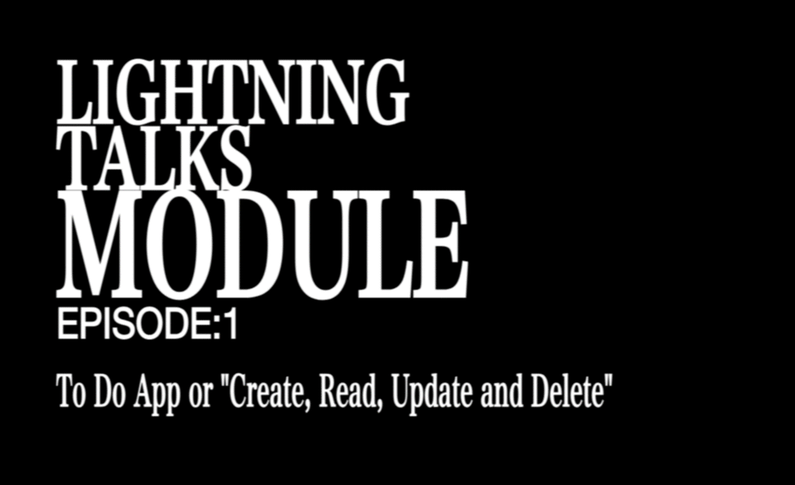
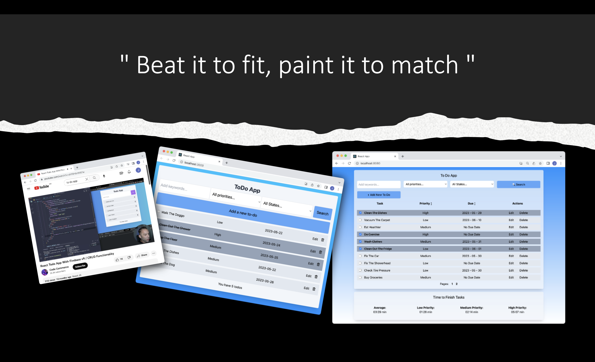
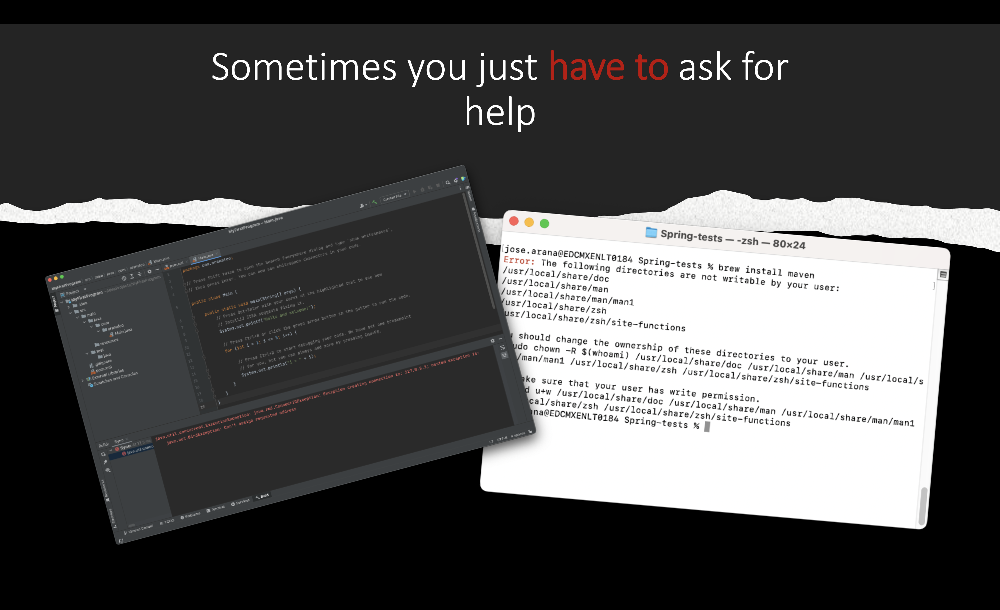

Week 07: Lightning Talks Part 1
(May 29 - June 7) 10-Minute Individual Presentation
After finishing the Todo App we were tasked with the Lightning Talks, a series of three individual presentations that we should give over the next three weeks. The first of these talks should be on a topic related to the Todo App and last a total of 10 minutes plus questions. The following talks should shorten that time to 7 and then to 5 minutes.
In my case I decided to focus the talk on the CRUD operations: Create, Read, Update and Delete. Because I think the Todo App also serves as the perfect way to illustrate this concepts due to its functionality and architecture. The cover is a reference to the Evangelion title cards, I wonder if anyone actually caught that:
Salma invited everyone who wanted to join her to give our presentations on wednesday but I was the only one who agreed. The rest of the apprentice team decided to give their presentations on friday. Going first has both advantages and disadvantages: The advantages are that you get to set the bar since the expectations are at the lowest, you also get the feedback early and can start focusing on the next presentation sooner. As to the disadvantages, you don't get to see other people's presentations and learn from their mistakes, and have in practical terms less time to create and rehearse the presentation.
Salma and me had to deal with some unforeseen problems too, namely we hadn't set up zoom to allow us to share our screens, so we had to get out and back into the meeting halfway before starting our respective presentations.
Other than that I'd say everything went pretty smoothly. I already received some of the feedback and based on that there's points that I'd like to work on. I've been told that I don't modulate my voice enough, which causes it to become a "drone" in the more wordy parts of the presentation. I've also been corrected on the pronunciation of some words, like specifically (the "a" is mute) and CRUD (pronounced "crud" instead of "cee ar u dee").
Some people also brought up positive points, like the visuals of the presentation and the balance between the words on the screen and those on my script.
In the final slide of the presentation I brought back the same thought that I used to finish the blog entry last week. Some times you just need to ask for help. I wasn't able to get enough rehearsal time with Martin Cocoba, who has said he will be helping us with our LTs, that's something more I'd like to improve for the next LT.
Uploaded on June 7, 2023